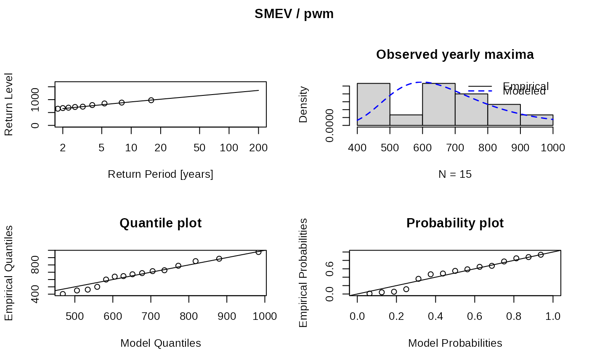

Plot graphs of MEVD, SMEV or TMEV fit
plot.mevr.RdA return level plot, qq-plot, pp-plot nd a histogram wit the fitted density is produced
Arguments
- x
An object of class
mevr, whosetypeargument is one of MEVD, SMEV or TMEV- q
vector of return periods, \(q > 1\).
- ci
if
ci=TRUE, confidence intervals will be computed.- type
if omitted a panel with a return level plot (
type='rl', a density plot (type='hist'), a qq-plot (type='qq') and a probability plot (tpe='pp') are shown.- ...
Further parameters may also be supplied as arguments. See e.g. plot.
Examples
data(dailyrainfall)
# fit a simplified MEVD
fit <- fsmev(dailyrainfall)
fit
#> MEVD fitting
#>
#> Type: SMEV
#> Estimator: pwm
#>
#> Parameters:
#> Scale C:
#> [1] 89.59
#>
#> Shape w:
#> [1] 0.8643
#>
#> Mean number of wet days n:
#> [1] 179.2
#>
#> Threshold:
#> [1] 0
plot(fit)

# fit MEVD
fit <- fmev(dailyrainfall, method = "ls")
fit
#> MEVD fitting
#>
#> Type: MEVD
#> Estimator: ls
#>
#> Parameters:
#> Scale C:
#> [1] 73.06 83.63 82.86 111.02 80.30 110.29 91.17 77.17 90.30
#> [10] 84.21 99.11 76.29 104.38 90.32 87.46
#>
#> Shape w:
#> [1] 0.8479 0.9436 0.8561 0.9454 0.9251 0.9151 0.8832 0.8863 0.8455
#> [10] 0.9110 0.9830 0.8577 0.8290 0.9364 0.8876
#>
#> Wet days n:
#> [1] 151 148 187 190 169 157 185 193 202 211 202 176 169 170 178
#>
#> Years:
#> [1] 15
#>
#> Threshold:
#> [1] 0
plot(fit)